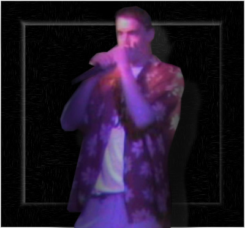

Scott "Scoot" Rehlander

| Occupation: | Currently employed as a full-time software engineer at High Resolution Engineering in Woburn, MA. |
| Hobbies & Interests: | Computers and the world of competitive car audio custom fabrication and installation. |
| E-Mail: | srehlander@gmail.com |
| Hometown: | Topsfield, MA |
| High School: | Bishop Fenwick High School - Peabody, MA |
| Resume: | I'm happily employed. ;-] |
| Background Info: | Born in Beverly, MA, I was moved, along with my family, to the small town of Gorham, ME. In my childhood, I spent most of my time typing my days away at the computer, always striving to learn the newest, most innovative technologies dealing with computers and programming. One thing that intrigued me most was the "World Wide Web." Since I can remember, I have been fluent in HTML, Java, and C#, and pride myself on the artwork I have learned to create in Adobe Photoshop. I could not draw, and no matter how many times I tried to learn, it always came out bad. On the computer, it was a different story. There I could strive to be the atristic perfectionist I always wished to be. Through my experiences in HTML, java, php, and Photoshop, I became a talented internet programmer, using only 100% original artwork for all of my web creations. On top of web design and programming, I also love to sing kareokee (especially Will Smith songs). |